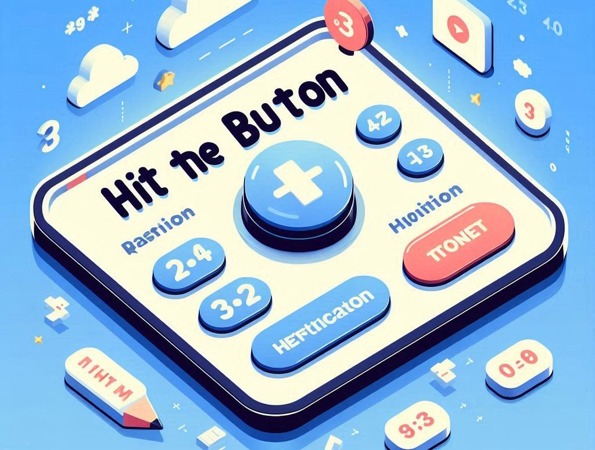

When it comes to improving math skills, the more you practice, the better you get. But let’s be honest, math practice can feel like watching paint dry on a rainy day. Enter maths practise hit the button fun, fast-paced, and well... slightly addictive. Whether you're a student needing some extra practice or a parent trying to sneak some learning into playtime, Hit the Button is here to save the day!
So, what exactly is this math game, and how can it help? Grab your calculator (just kidding, you won’t need one!), and let’s dive into the world of Hit the Button.
At its core, Hit the Button is an online math game that challenges players to answer as many questions as they can within a set time. The aim? Speed and accuracy. It's like whack-a-mole, but instead of bopping little critters, you're hitting correct answers (and trust me, it's a lot less messy).
There are multiple categories to choose from, making it versatile for students of all ages and abilities. Whether you're practicing multiplication, division, addition, or subtraction – Hit the Button has you covered.
The interface is simple. You start by choosing the type of math you want to practice – addition, subtraction, times tables, or division – and then the game gives you a number of possible answers to choose from. You have to "hit the button" on the correct answer as quickly as possible. But don’t be fooled by the simplicity! As the clock ticks down, the pressure ramps up, and suddenly, finding 7 x 8 becomes as difficult as landing a triple backflip on a unicycle.
You might be wondering, "Why not just use flashcards or worksheets?" Well, let me give you a few good reasons to hit that button:
Math practice can sometimes feel like eating broccoli – you know it's good for you, but you're not exactly excited about it. Here’s how you can make it a part of your daily routine:
One of the standout features of Hit the Button is its emphasis on multiplication tables. Now, I don’t know about you, but when I was a kid, memorizing times tables felt like some ancient form of torture. But knowing your times tables inside out is one of those skills that can make all other areas of math so much easier.
Sure, Hit the Button is designed for kids, but who says adults can’t have a little fun too? In fact, it’s a great way for grown-ups to brush up on rusty skills, especially if you’re someone who struggles to calculate the tip at a restaurant without reaching for your phone.
Plus, playing along with your kids is a great way to bond and turn math into something enjoyable, rather than a chore. It’s amazing how quickly you’ll find yourself sucked into the competition.
Practicing math regularly doesn’t just improve your grades; it boosts brain power, memory, and problem-solving skills. The more you practice, the better you get at recognizing patterns and coming up with solutions on the fly.
And the best part? When you’re consistently playing games like Hit the Button, you’re developing all these skills without even realizing it. It’s a bit like sneaking vegetables into a smoothie – you’re getting all the good stuff without the complaints.
At the end of the day, math practice doesn’t have to be boring. With a tool like Hit the Button, you're not just improving your skills; you're having fun doing it. Whether you're a kid just learning the basics or an adult looking to keep your brain sharp, Hit the Button is a great way to challenge yourself, track your progress, and most importantly, enjoy the process.
So, next time you need to work on your math skills, ditch the worksheets and give Hit the Button a try. Who knows? You might even find yourself... dare I say it... enjoying math practice.